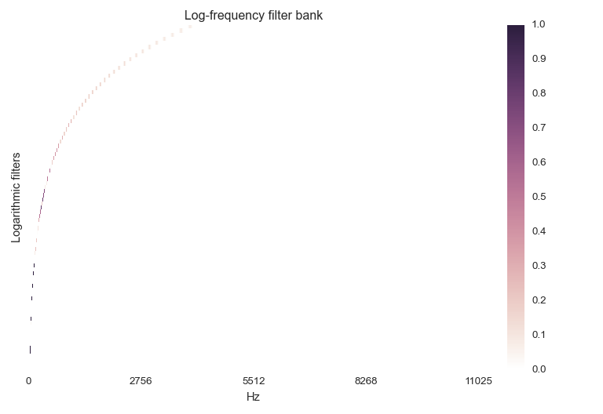

librosa.filters.logfrequency¶
- librosa.filters.logfrequency(sr, n_fft, n_bins=84, bins_per_octave=12, tuning=0.0, fmin=None, spread=0.125)[source]¶
Approximate a constant-Q filter bank for a fixed-window STFT.
Each filter is a log-normal window centered at the corresponding frequency.
Warning
Deprecated in librosa 0.4
Parameters: sr : int > 0 [scalar]
audio sampling rate
n_fft : int > 0 [scalar]
FFT window size
n_bins : int > 0 [scalar]
Number of bins. Defaults to 84 (7 octaves).
bins_per_octave : int > 0 [scalar]
Number of bins per octave. Defaults to 12 (semitones).
tuning : None or float in [-0.5, +0.5] [scalar]
Tuning correction parameter, in fractions of a bin.
fmin : float > 0 [scalar]
Minimum frequency bin. Defaults to C1 ~= 32.70
spread : float > 0 [scalar]
Spread of each filter, as a fraction of a bin.
Returns: C : np.ndarray [shape=(n_bins, 1 + n_fft/2)]
log-frequency filter bank.
Examples
Simple log frequency filters
>>> logfb = librosa.filters.logfrequency(22050, 4096) >>> logfb array([[ 0., 0., ..., 0., 0.], [ 0., 0., ..., 0., 0.], ..., [ 0., 0., ..., 0., 0.], [ 0., 0., ..., 0., 0.]])
Use a narrower frequency range
>>> librosa.filters.logfrequency(22050, 4096, n_bins=48, fmin=110) array([[ 0., 0., ..., 0., 0.], [ 0., 0., ..., 0., 0.], ..., [ 0., 0., ..., 0., 0.], [ 0., 0., ..., 0., 0.]])
Use narrower filters for sparser response: 5% of a semitone
>>> librosa.filters.logfrequency(22050, 4096, spread=0.05)
Or wider: 50% of a semitone
>>> librosa.filters.logfrequency(22050, 4096, spread=0.5)
>>> import matplotlib.pyplot as plt >>> plt.figure() >>> librosa.display.specshow(logfb, x_axis='linear') >>> plt.ylabel('Logarithmic filters') >>> plt.title('Log-frequency filter bank') >>> plt.colorbar() >>> plt.tight_layout()
